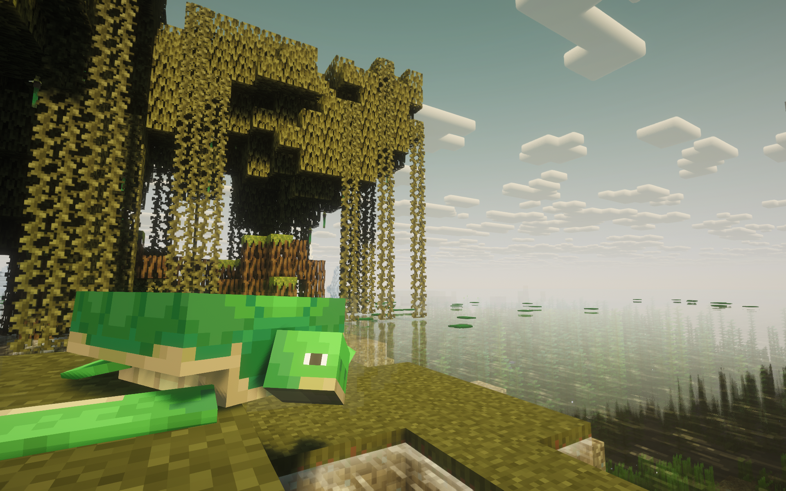
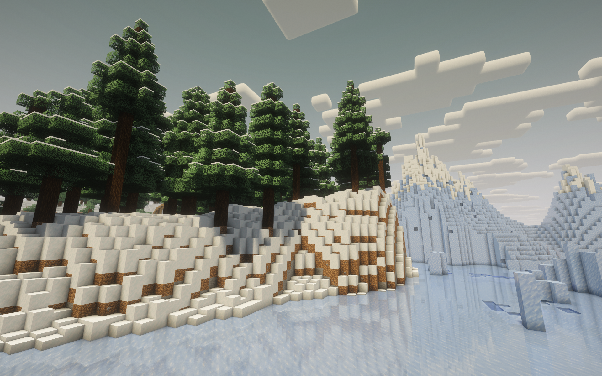
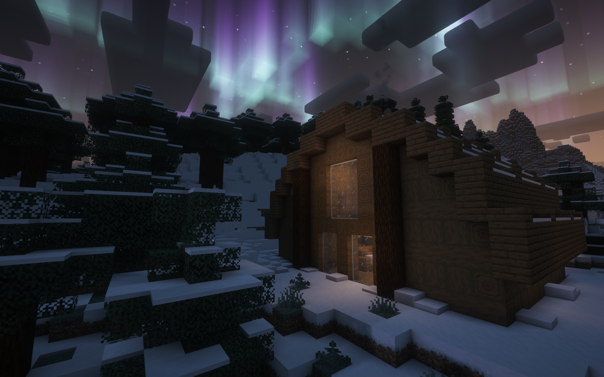
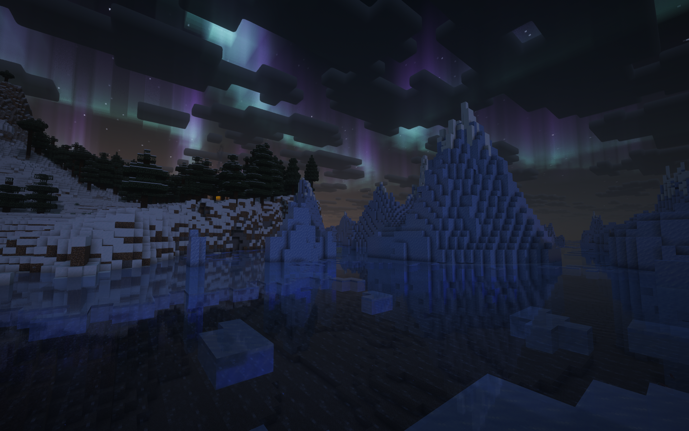
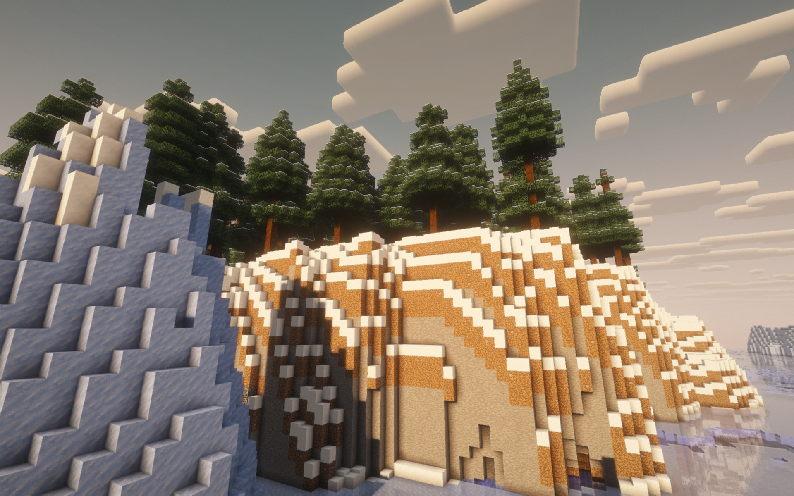

Vanilla Minecraft, only faster, smoother and far more comfortable to play.
Built for speed, kept true to vanilla
Vanilla Velocity is a Fabric 26.2 modpack designed around one idea: Minecraft should feel like Minecraft, just without the stutter. suparabbitboy put together a carefully tested set of optimization mods so the game starts quicker, loads chunks faster and holds a steady frame rate, even with shaders and a large view distance.
The rendering engine is handled by Sodium and Iris, with Lithium, FerriteCore, Entity Culling, ImmediatelyFast and more working behind the scenes. Together they cut CPU load, lower memory use and skip work for anything you cannot see.

What you get
Faster performance
Sodium, Lithium, FerriteCore, Entity Culling and Dynamic FPS keep the game smooth on modest hardware and efficient when minimized.
Everyday comfort
Minimap and world map, Jade tooltips, AppleSkin food info, JEI recipes and Mouse Tweaks make every session less fiddly.
Shaders ready
Six shader packs are included, from lightweight Complementary Reimagined to the atmospheric Bliss and Photon.
Better multiplayer
Ping-Wheel, e4mc, ViaFabricPlus and NoChatReports make playing with friends and joining servers easier and more private.
Polished visuals
Falling leaves, rain particles, animated doors, Fresh Animations and Continuity give the world life while staying vanilla-style.
Creative tools
Axiom, WorldEdit, Flashback and Buildprint support builders, cinematic creators and map makers.
Why Vanilla Velocity?
Large modpacks often feel heavy. Vanilla Velocity takes the opposite approach: every mod earns its place by either making the game run better or removing a small annoyance. Nothing here adds new dimensions or overhauls progression, so your worlds, builds and muscle memory still apply.
Quality-of-life changes are everywhere once you start playing. Chat remembers more history and shows player heads, the F3 screen is readable, advancements get neat plaques, pickups show a quick notification, and shulker boxes can be previewed with a hover. These details save seconds hundreds of times per session.
Everything is configured in-game with sensible defaults, and Mod Menu shows what is installed. Whether you play singleplayer, on a server or with friends over e4mc, the pack was made by suparabbitboy to just work from the first launch.
Screenshots





Click a screenshot to enlarge it. Screenshots and pack by suparabbitboy.